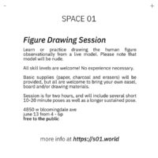

Figure Drawing Session
Learn or practice drawing the human figure observationally from a live model. Please note that model will be nude. All skill levels are welcome! No experience necessary. Basic supplies (paper, charcoal and erasers) will be provided, but all are welcome to bring your own easel, board and/or drawing materials. Session is for two hours, and